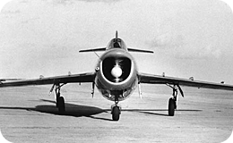

<!DOCTYPE html>
<html lang="en">
<head>
    <meta charset="utf-8">
    <meta http-equiv="X-UA-Compatible" content="IE=edge">
    <meta name="viewport" content="width=device-width, initial-scale=1">
    <title>Library</title>
    <link href="css/bootstrap.min.css" rel="stylesheet">
    <link href="css/owl.carousel.css" rel="stylesheet">
    <link href="css/jquery.jscrollpane.css" rel="stylesheet">
    <link href="css/style.css" rel="stylesheet">

    <!--[if gte IE 9]>
    <style type="text/css">
        .gradient {
            filter: none;
        }
    </style>
    <![endif]-->
    <script src="https://oss.maxcdn.com/html5shiv/3.7.2/html5shiv.min.js"></script>
    <script src="https://oss.maxcdn.com/respond/1.4.2/respond.min.js"></script>
</head>
<body class="map plain_badges">
<header class="main main_badges">
    <a href="#" class="logo"></a>
    <nav>
        <ul>
            <li><a href="librar.html">Библиотека</a></li>
            <li><a href="heroes.html">Герои</a></li>
            <li><a href="badges.html">Награды</a></li>
            <li><a href="#">Помощь</a></li>
        </ul>
        <figure class="avatar">
            <div class="frame"></div>
            
        </figure>
        <a href="#" class="user_name">Илья Фомин</a>
    </nav>
</header>
<div class="container">
    <div class="container">
        <div class="row">
            <div class="col-xs-12 text-center">
                <ul class="select_tabs_tech" role="tablist">
                    <li role="presentation" class="active"><a href="#tab1" aria-controls="tab1" role="tab" data-toggle="tab">Сухой Суперджет 100</a> </li>
                    <li role="presentation"><a href="#tab2" aria-controls="tab2" role="tab" data-toggle="tab">Авиация</a> </li>
                    <li role="presentation"><a href="#tab3" aria-controls="tab3" role="tab" data-toggle="tab">История</a> </li>
                </ul>
            </div>
        </div>
    </div>
    <div class="tab-content info_window_inner">
        <div role="tabpanel" class="tab-pane fade in active" id="tab1">
            <div class="container">
                <div class="col-xs-12 text-center">
                    <h1 class="title_page">Сухой Суперджет 100</h1>
                </div>
                <div class="row">
                    <div class="col-xs-6">
                        <p class="text_tech">
                            Сухой Суперджет 100 – первый пассажирский самолет, построенный в современной России. Он предназначен для региональных перелетов. Лайнер создали для того, чтобы заменить в нашей стране известные, но устаревшие модели - Ту-154, Як-42 и Ту-134. Ты наверняка слышал или читал об этих самолетах? Сухой Суперджет стал первым российским пассажирским самолетом, который создали с использованием цифровых «безбумажных» технологий.
                            Раньше, когда еще не были изобретены компьютеры, все чертежи будущего самолета выполнялись людьми только «вручную». Множество конструкторов тщательно
                            и скрупулёзно создавали будущий летательный аппарат. А Сухой Суперджет 100 проектировали исключительно в цифровом формате: весь цикл создания российского
                            лайнера существовал только в компьютере, а не на бумаге, как раньше. И, конечно, не обошлось без 3D-моделирования.
                        </p>
                    </div>
                    <div class="col-xs-6">
                        
                    </div>
                </div>
                <div class="row">
                    <div class="col-xs-12">
                        
                    </div>
                </div>
                <div class="row">
                    <div class="col-xs-9">
                        <p>Самолет Сухой Суперджет впервые был представлен публике 26 сентября 2007 года, а первый полет российский авиалайнер совершил 19 мая 2008 года. Он длился 1 час и 5 минут. Российский лайнер расходует меньше топлива, чем ближайший конкурент. Самолет Сухой Суперджет 100 постарались спроектировать очень комфортным для пассажиров: кресла сделали более широкими и удобными, увеличили проход и расширили багажные полки. Данная машина разработана специально для перевозки пассажиров. Для этого было создано две модификации, которые отличаются количеством мест для пассажиров. Один аппарат способен перевозить 75 пассажиров, а второй – 95. В
                            кабине пилотов стоят приборы, защищающие самолет и пассажиров от возможных ошибок пилотов. Эксплуатировать лайнер можно в любую погоду.</p>
                        
                    </div>
                    <div class="col-xs-3">
                        
                        <p>Ты спросишь почему так называется самолет? Разработчик и производитель самолета – компания «Гражданские самолеты Сухого», подразделение концерна «Сухой». Это фамилия выдающегося советского авиаконструктора, доктора технических наук, одного из основателей советской реактивной и сверхзвуковой авиации. А звали его Павел Осипович Сухой (1895-1975 г.г.)
                        </p>
                    </div>
                </div>
            </div>
        </div>
        <div role="tabpanel" class="tab-pane fade " id="tab2">
            <div class="container">
                <div class="col-xs-12 text-center">
                    <h1 class="title_page">Авиация</h1>
                </div>
                <div class="row">
                    <div class="col-xs-6">
                        <p class="text_tech">
                            Первые профессиональные попытки человечества покорить небо были предприняты еще в 19 веке. Хотя оторваться от земли человек пытался еще до нашей эры, утверждают историки. Спустя века, мы укротили небо. Человек может за несколько часов преодолеть невероятные расстояния. Например, с утра ты завтракаешь в России, а вечером ужинаешь в Америке. И все это благодаря современным самолетам, которыми сегодня уже никого не удивишь!
                            Воздушные лайнеры – это неотъемлемая часть нашей жизни. А знаешь ли ты, что наша страна всегда была великой авиационной державой?
                        </p>
                    </div>
                    <div class="col-xs-6">
                        
                    </div>
                </div>
                <div class="row">
                    <div class="col-xs-4">
                        
                    </div>
                    <div class="col-xs-4">
                        
                    </div>
                    <div class="col-xs-4">
                        
                    </div>
                    <div class="col-xs-12">
                        <p>Прошло более ста лет с тех пор, как в российском авиастроении произошло великое событие: 11 июля 1910 года в Санкт-Петербурге открылся первый в стране авиационный завод. С того самого времени несколько поколений талантливых отечественных конструкторов, ученых, инженеров, изобретателей создали сотни типов всевозможных воздушных судов. </p>
                    </div>
                </div>

            </div>
        </div>
        <div role="tabpanel" class="tab-pane fade" id="tab3">
            <div class="container">
                <div class="col-xs-12 text-center">
                    <h1 class="title_page">История</h1>
                </div>
                <div class="row">
                    <div class="col-xs-6">
                        <p class="text_tech">
                            История русской авиации не насчитывает несколько веков. Моноплан контр-адмирала Александра Можайского стал первым самолетом, построенным в России и одним из первых – в мире. Известно, что аэроплан имел винты, фюзеляж с матерчатой обшивкой, крыло, покрытое аэростатным шелком, стабилизатор, рули высоты, киль и шасси. Летательный аппарат весил 820 килограммов. Испытания самолета состоялись 20 июля 1882 года и прошли неудачно. Аэроплан разогнали, он поднялся в воздух, пролетел несколько метров, завалился на бок и рухнул, сломав крыло. После аварии военные потеряли интерес к разработке.
                        </p>
                    </div>
                    <div class="col-xs-6 text-center">
                        
                        <p>Моноплан контр-адмирала Александра Можайского</p>
                    </div>
                </div>
                <div class="row">
                    <div class="col-xs-5 text-center">
                        
                        <p>Cамолет «Россия-А»</p>
                        
                        <p>Cамолет «Илья Муромец»</p>
                    </div>
                    <div class="col-xs-7">
                        <p>Настоящее развитие русской авиации началось в 1909 году. Тебе будет интересно узнать, что в России до этого времени только ремонтировали иностранные самолеты, которые прилетали в нашу страну. А в 1909 году эти самые мастерские были переделаны для того, чтобы уже выпускать отечественные самолеты. В 1910 году выпущены первые русские летательные аппараты. Самый первый самолет был назван «Россия-А». Этот самолет был разработан на основе популярной в те времена конструкции Анри Фармана. Для сравнения, самолеты импортного производства стоили намного дороже русских машин – четырнадцать тысяч рублей. Первый отечественный авиационный завод занимал совсем небольшую территорию. Тогда здесь могли выпустить только один самолет в месяц. Но, сравнивая отечественные самолеты и самолеты зарубежного производства, можно было утверждать, что наши были выполнены намного аккуратней. На русском авиазаводе имелось самое современное оборудование, которым не могли похвастаться зарубежные производства. На этом предприятии работали лучшие инженеры страны. Так вот в экстренных случаях, самолет могли выпустить за 2 недели. Жуковский, Сикорский, Чаплыгин, Можайский – эти люди стояли у истоков российской авиации. </p>
                    </div>
                </div>

            </div>
        </div>
    </div>

    <!--<div class="" id="info_window">-->
        <!--<div class="info_window_inner">-->
                <!--<div class="scroll_content">-->
                    <!--<p class="text_tech"> -->
                        <!--Сухой Суперджет 100 – первый пассажирский самолет, построенный в современной России. Он предназначен для региональных перелетов. Лайнер создали для того, чтобы заменить в нашей стране известные, но устаревшие модели - Ту-154, Як-42 и Ту-134. Ты наверняка слышал или читал об этих самолетах? Сухой Суперджет стал первым российским пассажирским самолетом, который создали с использованием цифровых «безбумажных» технологий.-->
                        <!--Раньше, когда еще не были изобретены компьютеры, все чертежи будущего самолета выполнялись людьми только «вручную». Множество конструкторов тщательно-->
                        <!--и скрупулёзно создавали будущий летательный аппарат. А Сухой Суперджет 100 проектировали исключительно в цифровом формате: весь цикл создания российского-->
                        <!--лайнера существовал только в компьютере, а не на бумаге, как раньше. И, конечно, не обошлось без 3D-моделирования.-->
                    <!--</p>-->
                    <!--<p>-->
                        <!---->
                        <!--Сухой Суперджет 100 – первый пассажирский самолет, построенный-->
                        <!--в современной России. Он предназначен для региональных перелетов. Лайнер создали для того, чтобы заменить в-->
                        <!--нашей стране известные, но устаревшие модели - Ту-154, Як-42 и Ту-134. Ты наверняка слышал или читал об этих-->
                        <!--самолетах? Сухой Суперджет стал первым российским пассажирским самолетом, который создали с использованием-->
                        <!--цифровых «безбумажных» технологий. Раньше, когда еще не были изобретены компьютеры, все чертежи будущего самолета-->
                        <!--выполнялись людьми исключительно «вручную». Множество конструкторов тщательно и скрупулёзно создавали будущий летательный аппарат.-->
                        <!--А Сухой Суперджет 100 проектировали исключительно-->
                        <!--в цифровом формате: весь цикл создания российского лайнера существовал только в компьютере, а не на бумаге, как раньше. И, конечно,-->
                        <!--не обошлось без 3D-моделирования.</p>-->
                    <!--<p>Ты спросишь почему так называется самолет? Разработчик и производитель самолета –-->
                        <!--компания «Гражданские самолеты Сухого», подразделение концерна «Сухой». Это фамилия-->
                        <!--выдающегося советского авиаконструктора, доктора технических наук, одного из основателей-->
                        <!--советской реактивной и сверхзвуковой авиации. А звали его Павел Осипович Сухой (1895-1975 г.г.)-->
                        <!--Самолет Сухой Суперджет впервые был представлен публике 26 сентября 2007 года, а первый полет-->
                        <!--российский авиалайнер совершил 19 мая 2008 года. Первый полет длился 1час и 5 минут. Российский-->
                        <!--лайнер расходует меньше топлива, чем ближайший конкурент. Самолет Сухой Суперджет 100 постарались-->
                        <!--спроектировать очень комфортным для пассажиров: кресла сделали более широкими и удобными, увеличили-->
                        <!--проход и расширили багажные полки. Салон самолета рассчитан на 78 и 98 пассажиров, в зависимости от комплектации.-->
                        <!--В кабине пилотов стоят приборы, защищающие самолет и пассажиров от возможных ошибок пилотов. Эксплуатировать лайнер можно в любую погоду.-->
                        <!--Кстати, многие Сухих Суперджет 100 в России носят собственные имена. Например, один из самолетов назвали в честь Юрия Гагарина –-->
                        <!--советского летчика-космонавта, кто впервые в мире совершил полет в космос, другой самолет носит имя Героя Советского Союза Михаила Водопьянова.-->
                    <!--</p>-->
                    <!--<div style="height: 100px;display: block"></div>-->
                    <!--&lt;!&ndash;<p>&nbsp;</p>&ndash;&gt;-->
                    <!--&lt;!&ndash;&ndash;&gt;-->
                    <!--&lt;!&ndash;<p>Первые попытки человечества покорить небо были предприняты еще в 19 веке. Спустя века, мы укротили небо.&ndash;&gt;-->
                    <!--&lt;!&ndash;Человек может за несколько часов преодолеть невероятные расстояния. Например, с утра ты завтракаешь в России,&ndash;&gt;-->
                    <!--&lt;!&ndash;а вечером ужинаешь в Америке. И все это благодаря современным самолетам, которыми сегодня уже никого не удивишь!&ndash;&gt;-->
                    <!--&lt;!&ndash;Воздушные лайнеры – это уже неотъемлемая часть нашей жизни. А знаешь ли ты, что наша страна всегда была великой авиационной&ndash;&gt;-->
                    <!--&lt;!&ndash;державой? Прошло уже более ста лет с тех пор, как в российском авиастроении произошло великое событие: 11 июля&ndash;&gt;-->
                    <!--&lt;!&ndash;1910 года в Санкт-Петербурге открылся первый в стране авиационный завод. С того самого времени несколько&ndash;&gt;-->
                    <!--&lt;!&ndash;поколений талантливых отечественных конструкторов, ученых, инженеров, изобретателей создали сотни типов&ndash;&gt;-->
                    <!--&lt;!&ndash;всевозможных воздушных судов.</p>&ndash;&gt;-->
                    <!--&lt;!&ndash;&ndash;&gt;-->
                <!--</div>-->


        <!--</div>-->
    <!--</div>-->


</div>

<script src="https://ajax.googleapis.com/ajax/libs/jquery/1.11.3/jquery.min.js"></script>
<script src="js/bootstrap.min.js"></script>

</body>
</html>